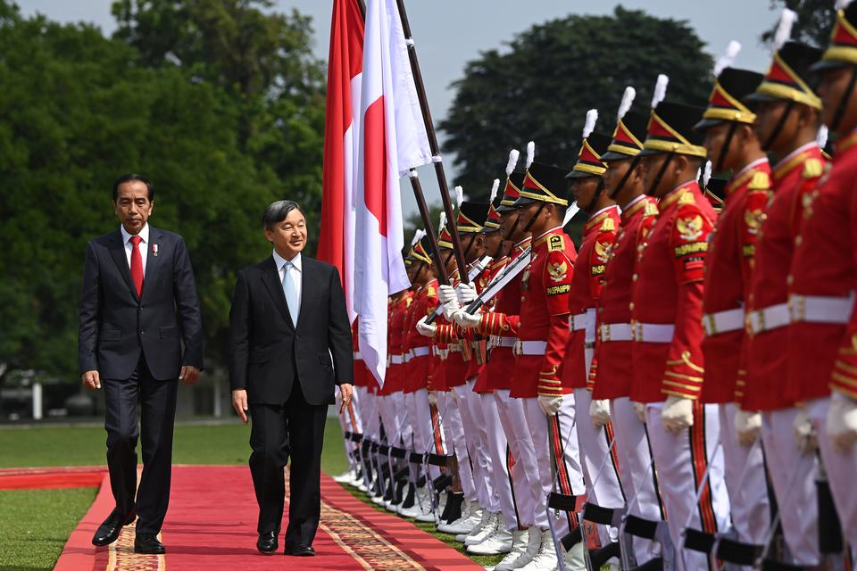
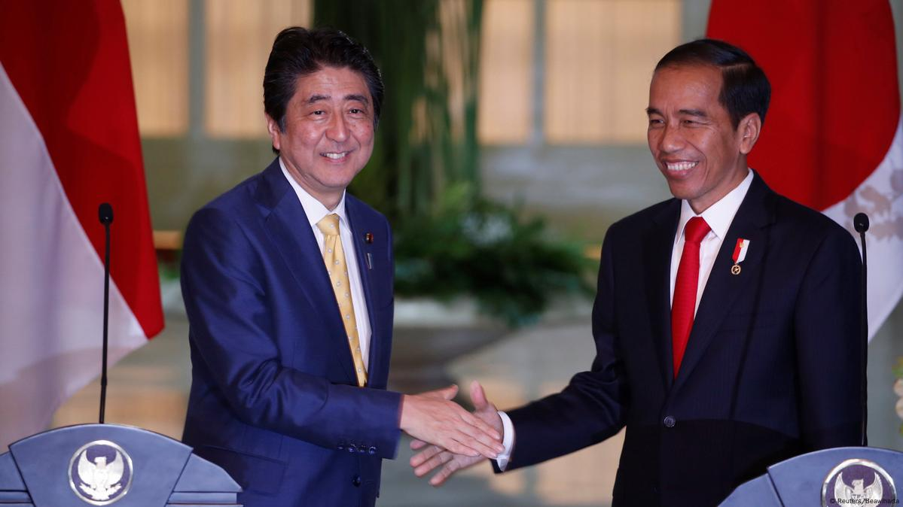

 
Kerja sama regional adalah bentuk kolaborasi antara negara-negara yang berada dalam satu kawasan geografis dengan tujuan untuk meningkatkan stabilitas, keamanan, dan kesejahteraan bersama. Kerja sama ini didorong oleh kesamaan geografis, budaya, sejarah, atau kepentingan ekonomi yang dimiliki negara-negara di kawasan tersebut. Dalam banyak kasus, negara-negara di tingkat regional cenderung menghadapi tantangan serupa, seperti masalah perdagangan lintas batas, keamanan regional, perubahan iklim, hingga pengelolaan sumber daya alam yang berkelanjutan. Melalui kerja sama regional, negara-negara dapat mencari solusi bersama yang lebih efektif dan memperkuat hubungan antarnegara. Bentuk kerja sama ini dapat berupa organisasi formal, seperti ASEAN di Asia Tenggara atau Uni Afrika, maupun kesepakatan informal yang melibatkan beberapa negara di kawasan tersebut untuk menangani isu tertentu. Kerja sama ini juga berperan penting dalam memperkuat posisi kawasan dalam menghadapi tantangan global.
1. ASEAN-Japan Partnership Jepang bekerja sama dengan negara-negara ASEAN, termasuk Indonesia, dalam berbagai program ekonomi, pendidikan, dan pembangunan infrastruktur, seperti pendanaan pembangunan jalan dan pelabuhan di kawasan Asia Tenggara.
2. Peningkatan Kapasitas Maritim Jepang mendukung Indonesia dan negara ASEAN lainnya dalam penguatan keamanan maritim di kawasan, termasuk pelatihan penjaga pantai dan penyediaan kapal patroli.
3. Inisiatif Infrastruktur Berkelanjutan Melalui inisiatif Partnership for Quality Infrastructure, Jepang membantu pembangunan proyek-proyek infrastruktur di Indonesia, seperti kereta MRT Jakarta dan pelabuhan internasional.
4. Kerja Sama Mitigasi Bencana di ASEAN Dalam kerangka ASEAN, Jepang memberikan bantuan teknologi dan pelatihan untuk mitigasi bencana, seperti sistem peringatan dini tsunami dan gempa di Indonesia, sebagai bagian dari dukungan regional untuk pengurangan risiko bencana.